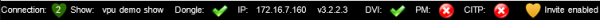
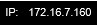

The status bar offers an overview about the system status:

| Not connected (red heart) or connected (green heart) as described in: Connection The number indicates the number of the session. |
|
| Name of the show file | |
| Shows the status of the dongle | |
|  | Used IP address for MA Net |
| Shows the render settings states: DVI- output and Pixel Mapper | |
| Inviting of the VPU can be enabled or disabled |
| Shows all existing users, e.g. administrator, guest...' Some features e.g. the blind-functionality need the assignment to a user. |
|
| Shows the used fixture layer. You can switch the fixture layer via this drop down menu. |
|
| Assign a VPU camera (e.g. Camera 1) to an output. This function is identical to the former “Softedge ID” |